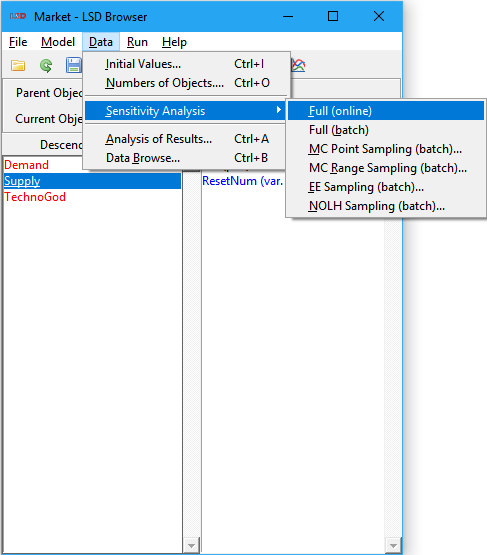
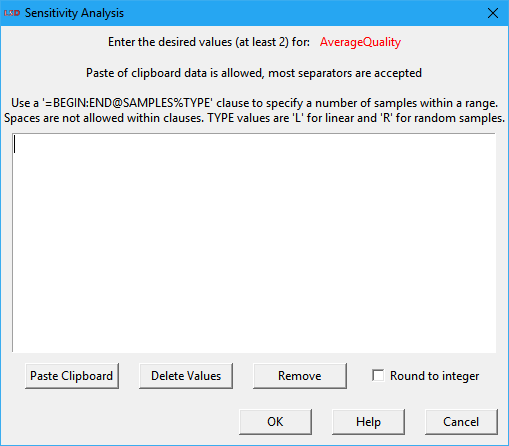
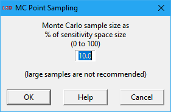
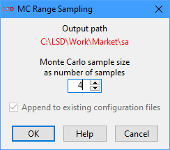
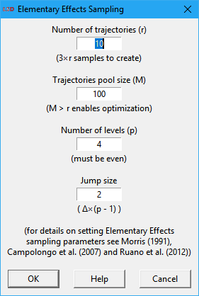
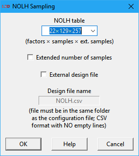

LSD Sensitivity Analysis
|
 |
1. SA workflow |
Sensitivity analysis (SA) allows the user to generate one or more model configuration(s) with a different combination of the initialization values for Parameters and lagged Variables. SA is typically done to evaluate how uncertainty in the results of a simulation run can be apportioned to the sources of uncertainty in the model Equations and configuration.
When the number of elements involved in the SA is large or the number of values for each element is significant, the manual assignment of the initialization data can be difficult and prone to errors. LSD can automatically generate and run all the required configurations, each one containing one combination of the required initialization values, to perform different SA approaches.
The idea behind SA is the exploration of the model simulation results, provided by its Variables, according to different initialization values for Parameters and lagged Variables (the factors, in SA terms). Comprehensive SA usually goes beyond simply changing initialization values one at a time and involves modifying multiple values for several factors at once, in a (likely complicated) combinatorial process.
For example, suppose your model includes Parameter A and Parameter B (the factors), each with only one instance in the model. If you want to test the model with A assuming values 1, 3, 5 ,7 (four levels) and B taking the initial values 2, 4 (two levels), a proper SA should explore the 8 possible combinations of the two factors: (1,2), (1,4), (3,2), (3,4), (5,2), (5,4), (7,2), (7,4). In SA terms, this approach is our design of experiments (DoE) and the ensuing combinations list represents the points in the sampling set. In LSD, to perform the SA of your model using this DoE you need to generate 8 different .lsd model configuration files, each one assigned to a sampling point, run the simulation for each configuration file, and compare the results obtained for the sampling set composing the DoE.
Also note that, because of the “combinatorics curse”, the full exploration of the entire parametric space – a factorial DoE – is restricted, because of computational time constraints, to situations involving just a few factors and levels. For larger models, SA usually involves exploration of many factors (Parameters and lagged Variables in LSD) over a large number of levels for each factor. To overcome the combinatorics curse, two approaches are usually employed: sampling the factorial DoE or using a high-efficiency DoE.
LSD offers a full set of tools to perform sophisticated sensitivity analysis (SA), divided in two groups. The first one covers the sampling methods (DoE’s) required to collect samples of the model’s results across its parametric space (i.e., sets of the possible combinations of the initialization values for Parameters and lagged Variables). LSD supports several DoE strategies: full factorial, Monte Carlo sampled factorial, elementary effects, and near-orthogonal Latin hypercube. The second group of SA tools is targeted on performing the advanced statistical analysis on the sampled data produced by LSD and is provided by means of the LSDsensitivity R package.
The workflow for the complete SA process is relatively long and presents variations according to the type of SA being performed. Below are the minimum steps to perform SA on a working LSD model.
1. In LMM create a no-window (command prompt) version of your model by selecting menu Model>Create 'No Window' Version. This special version of the LSD model program will be required to process your SA configurations as fast as possible, likely in parallel. Make sure to update (recompile) the no-window version of your model before performing the SA every time you change your equation file.
2. In LSD Browser make sure that all initialization values for Parameters and lagged Variables are set with the correct “calibration” (default) values (menu Data>Initial Values or Initial Values in the right mouse button context menu), that all the required result Variables are being saved (menu Model>Change Element or Save in the right mouse button context menu) and the number of desired Monte Carlo runs (if stochastic components are present) for each SA sample (point) is defined (menu Run>Simulation Settings).
3. Save your “calibration” set up in a baseline .lsd model configuration file (menu File>Save As), preferably in a new folder inside your current model configuration folder (you can create a new folder while in the Save As dialog box). The SA process creates many files and it is recommended to keep them in a dedicated subdirectory.
4. (Re)load your baseline .lsd configuration if it is not already loaded (menu File>Load)
5. Define the Parameters and lagged Variables to be explored in the SA and their test values or the maximum/minimum ranges, according to the chosen sampling method, using the SA data entry window.
6. After choosing all values/ranges to test, save your exploration space definition as a .sa sensitivity analysis file using the same base name and folder as your .lsd baseline configuration (menu File>Save Sensitivity).
7. With both .lsd and .sa files loaded (use menu File>Load and File>Load Sensitivity if required), select menu Data>Sensitivity Analysis>XXXX, replacing XXXX by the desired SA type (see options below), check the proposed defaults, and modify the required configuration values, if required (the defaults are usually adequate). When you click OK, several new .lsd configuration files will be created in your baseline configuration subdirectory (those are the sample points to be explored in the SA exercise).
a. If an out-of-sample additional set of sample points is required in a NOLH SA exercise, immediately after the previous step, select menu Data>Sensitivity Analysis>MC Range Sampling, and adjust the defaults if required, to create the out-of-sample validation set (more .lsd files will be created, for the additional sampling points).
8. Immediately after the previous step, select menu Run>Create/Start Parallel Batch, accept using the just created configuration, adjust the number of cores (only if going to run in another machine), and decide if you want to start the (time-consuming) processing right now or later (in the current or in another machine).
a. If running later in the same machine, you just have to execute the created script file (.bat or .sh) inside the subdirectory where your baseline .lsd file was created.
b. If running in another machine, you have to (i) copy the entire model folder and subfolders to the new machine (the remaining LSD folders are not required), (ii) recompile LSD for the new platform, if required, and (iii) execute the script file (.bat or .sh) in the same subdirectory as your baseline .lsd file.
c. You can follow up the parallel batch processing by verifying the contents of the created .log file(s) created in your baseline directory.
As soon as all the LSD .res[.gz] results files are generated (check the .log files), the produced SA data can be directly imported in R or any other data analysis package. Basic SA can be performed in LSD, using the Analysis of Results window tools to load the results files from disk and compare results from different initialization configurations.
When using R, more sophisticated, ready to use tools to perform Elementary Effects (EE) SA and Sobol variance decomposition (SVD) SA are available in the LSDsensitivity R package section below, including the follow up of this workflow.
The first step to set up a sensitivity analysis (SA) consists in defining the elements (Parameters and lagged Variables) and the respective initialization values to be explored. Any model element requiring an initialization value can be included in a SA experiment. Any number of elements can be added to a SA experiment.
Elements are included for SA by defining at least two different values in which each element should be explored. The definition of exploration values is done in the Sensitivity Analysis entry window, shown below. The SA window can be open by selecting the button Sensitivity in the Change Element window (double click on the element, or using the menu Model>Change Element, or selecting Change in the context menu, or yet pressing Enter when the element name is selected) or right-clicking on the element in the Variables and Parameters list box and selecting Sensitivity from the context menu.

The top part of the SA window is occupied by the data entry area. Depending on the type of SA exercise to be performed, the user must enter here a set (Full and MC Point Sampling options) or a range (MC Range, EE and NOLH Sampling options) of values. Value sets may contain from two to any number of integer or float values and the SA is performed considering each individual value. Value ranges consist of two integer or float values and the SA is done in the range defined by the two values (included). If more than two values are supplied for a value range, only the first two are used. The order of the values is not relevant. Float values should use the point (.) as the decimal separator. Scientific notation float numbers are allowed (use the “E” or “e” prefix to indicate the 10 exponent).
Individual values can be separated using any combination of the most usual separators, including spaces, tabs, commas, semi-colons, colons, line-feeds etc.
To simplify the entry of some specific value sets, the user can use the special =BEGIN:END@SAMPLES%TYPE clause. It is interpreted by LSD as a set containing the number SAMPLES of values. TYPE can define two types of sampling sets, linear (L) or random (R). Linear sets start from the value given by BEGIN and include the number SAMPLES of values until END. For instance, the clause =10:20@6%L produces the sampling set 10,12,14,16,18,20. Random sets include a number SAMPLES of random values between BEGIN and END (included). For example, the clause =0:1@5%R may generate a sampling set like 0.124,0.572,0.390,0.972,0.641 (float numbers have usually 15 significant digits). Multiple clauses, as well individual values, may be combined to compose the sampling set.
It should be noted that only the test values included in the SA data area are used for producing the sampling sets. The current initialization value for the Parameter or lagged Variable IS NOT automatically included in the SA. If required, the user should add it to the value set.
There are three buttons and a checkbox under the SA data entry area:
· Paste: (shortcut: Ctrl+V) Insert the current system clipboard value at the cursor position. It is useful to transfer data from other applications (most separators accepted).
· Delete: Delete all the current values in the data entry area. Useful for replacing the existing values.
· Remove: Delete all the current values and remove the element from the SA experiment. The SA window is also automatically closed.
· Round to integer: Force converting all values to the closest integer value, even if produced by clauses or being randomly generated inside a range. It is useful for specifying initialization values for elements assumed to take integers only.
It should be noted that the values set for Parameters and lagged Variables SA ARE NOT saved in the regular .lsd model configuration files, because each configuration can be tested under different SA strategies. To save SA test values, the user should use the menu option File>Save Sensitivity and select a name for the SA configuration. Similarly, existing SA configuration data is not automatically loaded when the user loads a .lsd configuration. The menu option File>Load Sensitivity has to be used when required. Also notice that SA test values are lost whenever a model configuration file is (re)loaded or unloaded. Check here for more details on LSD file operations.
This command produces a full factorial design of experiment (DoE) for sensitivity analysis (SA), where all combinations of the configured test initialization values for Parameters and lagged Variables are explored. Differently from the other DoE methods, this one modifies the current model structure to create a single model configuration containing as many copies of the original model structure as necessary by the factorial combinatorics. It is appropriate to quickly analyze the SA of few elements without requiring more sophisticated batch/parallel processing.
In the example above, LSD would generate 8 different instances of the entire model structure directly descending from the Root Object, in a single model configuration. Of course, there will be now 8 instances of the Object(s) containing the Parameters A and B, each copy including a different combination of their initialization values.
Please note that the modified model structure is not saved or renamed. After creating the new structure, appropriate to run quick SA analysis online in the LSD Browser, the user most likely should save the modified model structure as a new model configuration (using menu option File>Save As). Otherwise, the current configuration file would be overwritten by default when the generated SA configuration is run.
This command produces a full factorial design of experiment (DoE) for sensitivity analysis (SA), where all combinations of the configured test initialization values for Parameters and lagged Variables are explored. Differently from the online version, the batch method creates multiple .lsd model configuration files, each one containing one copy of the original model structure configured as necessary by the factorial combinatorics. It is appropriate to perform the SA of larger number of elements or test values, benefiting from the acceleration provided by more sophisticated batch/parallel processing.
In the example above, LSD would generate 8 different .lsd configuration files with the same model structure. Each configuration file would contain different initialization values for the Parameters A and B, each including a different combination of their initialization values.
Note that the user can mix the two versions of the full factorial design (online and batch): firstly configuring a subset of the elements to include in the sensitivity analysis and using them to generate a single new (online) configuration, then configuring the remaining set of elements to perform the batch full SA.
After executing this command, a certain number of .lsd configuration files will be generated, as informed in the Log window. Before the analysis can be concluded, they have to be run to produce simulation results. Usually, the menu command Run>Create/Start Parallel Batch is the more convenient way to run the entire set of configuration files. Please refer to the recommended SA workflow on how to proceed.
This command produces a design of experiment (DoE) for sensitivity analysis (SA) consisting of a random fraction of a full factorial design (the Monte Carlo sample). A user-specified fraction of the combinations of the configured test initialization values for Parameters and lagged Variables is explored. The selected combinations are taken randomly. The method creates multiple .lsd model configuration files each one containing one copy of the original model structure configured using the selected combination of values.

The user specifies the Monte Carlo sample size as a percentage (0 to 100), in a dialog box like the one depicted above. Large sample sizes are only recommended when there are few elements and values for the SA. Note that LSD shows in the Log window the total number of combinations in a full factorial design, over which the provided percentage is applied to calculate the target number of points to sample. The provided factor should be large enough to produce (in average) at least one sample. The final number of configurations produced may be somewhat smaller or larger than the target number.
In the example above, if you set the MC sample size to 50%, LSD would generate, in average, 4 different .lsd configuration files (out of the 8 possible) with the same model structure. Each configuration file would contain different combinations for the initialization values of the Parameters A and B.
After executing this command, a certain number of .lsd configuration files will be generated, as informed in the Log window. Before the analysis can be concluded, they have to be run to produce simulation results. Usually, the menu command Run>Create/Start Parallel Batch is the more convenient way to run the entire set of configuration files. Please refer to the recommended SA workflow on how to proceed.
This command produces a design of experiment (DoE) for sensitivity analysis (SA) consisting of a set of randomly selected sampling points (the Monte Carlo sample). The MC sample set is taken from the parametric space defined by the set of configured test ranges for the Parameters and lagged Variables to be explored. The method creates multiple .lsd model configuration files each one containing one copy of the original model structure configured using the selected combination of values.

The user specifies the Monte Carlo sample size as an integer number, in a dialog box like the one depicted above. Very large sample sizes are only recommended when there are few elements and values for the SA, as processing time grows linearly with this number. If a previous SA sample was just created, LSD will offer the checkbox option Append to existing configuration files. If checked, this option will create the new .lsd configurations as an additional SA sample set, typically used as an out-of-sample set for the statistical analysis (see the SA workflow for details).
In the example above, we could define ranges instead of points to perform SA with Parameters A and B. Similarly to the initial configuration, we could use the range 1-7 for Parameter A and 1-2 for B, taking care of specifying them as integers in the SA data entry window if necessary. In this case, if you set the MC sample size to 4, LSD would generate 4 different .lsd configuration files with the same model structure. Each configuration file would (likely) contain different initialization values for the Parameters A and B.
After executing this command, a certain number of .lsd configuration files will be generated, as informed in the Log window. Before the analysis can be concluded, they have to be run to produce simulation results. Usually, the menu command Run>Create/Start Parallel Batch is the more convenient way to run the entire set of configuration files. Please refer to the recommended SA workflow on how to proceed.
This command produces a design of experiment (DoE) for sensitivity analysis (SA) consisting of a set of sampling points following elementary effects (EE) trajectories, i.e., random one-at-a-time changes of the values for Parameters and lagged Variables. The EE sample set is taken from the parametric space defined by the set of configured test ranges for the Parameters and lagged Variables to be explored. The method creates multiple .lsd model configuration files each one containing one copy of the original model structure configured using the selected combination of values.
This method was proposed Max D. Morris (1991) as a preliminary step in SA (screening), before the application of more robust and time-consuming SA methods. The method was further enhanced by Campolongo, Cariboni and Saltelli (2007). The algorithm used was developed by Ruano, Ribes, Seco and Ferrer (2012). It may be useful to identify unimportant Parameters and lagged Variables, potentially allowing their removal from a more in-depth SA investigation, like the Sobol variance decomposition.

The user specifies the settings for the EE algorithm in a dialog box like the one depicted above. The default values are usually adequate for most applications as a reasonable tradeoff between precision and execution time. The available options are:
· Number of trajectories: define how many times each Parameter or lagged variable under test will be changed. The higher the number of trajectories, the better of the parametric space is explored. The number of sampling points, with regard to this parameter, increases by a factor of the number of Parameters and lagged Variables under test plus 1. So, as simulation execution times increase linearly on this setting, large values may be unpractical.
· Trajectories pool size: specify the size of the pool of possible trajectories from which the trajectories to be used are selected. Increasing this number over the number of trajectories to explore allows the algorithm to pick the best trajectories in the pool to more efficiently cover the parametric space. As the creation of alternative trajectories can be time consuming in LSD for larger values, please wait until the command completes. This value does not affect the produced number of sampling points or the simulation execution times.
· Number of levels: set the number of levels (the grid size) to explore in each Parameter or lagged variable defined range of values (the extremes are always explored). It must be an even positive integer (>1). Larger values imply in a finer exploration of the parametric space, at the cost of more sampling points required (a higher computation times).
· Jump size: define the number of level units to increase the explored value for each Parameter or lagged variable for each new trajectory. It normally does not have to be changed.
After executing this command, a certain number of .lsd configuration files will be generated, as informed in the Log window. Before the analysis can be concluded, they have to be run to produce simulation results. Usually, the menu command Run>Create/Start Parallel Batch is the more convenient way to run the entire set of configuration files. Please refer to the recommended SA workflow on how to proceed.
This command produces a design of experiment (DoE) for sensitivity analysis (SA) consisting of a set of sampling points from a near-orthogonal Latin hypercube (NOLH). The NOLH is specified from the parametric space defined by the set of configured test ranges for the Parameters and lagged Variables to be explored. The method creates multiple .lsd model configuration files each one containing one copy of the original model structure configured using the selected combination of values.
This method was proposed by Cioppa and Lucas (2007) as a very efficient DoE in terms of the required number of samples to explore the parametric space under SA. The NOLH tables used were developed by Hélcio Vieira Jr. (2012) and Susan Sanchez (2015). NOLH sample sets can be used to fit meta-modeling methods, like Kriging, for producing enough sampling points to perform Sobol variance decomposition, as proposed in the LSDsensitivity R package.

The user specifies a few settings for the NOLH algorithm in a dialog box like the one depicted above. The default values are usually adequate for most applications as a reasonable tradeoff between precision and execution time. The available options are:
· NOLH table: define the predefined NOLH table to use. The number of factors of the table (columns) must be equal or larger than the number of Parameters and lagged Variables to explore in the SA. The first option (default) selects the smallest table supporting the number of test elements chosen by the user, producing the smallest sample set. It is recommended to use the largest table your computation time budget allows. If the number of factors is larger than supported by the internal tables, the message External only is presented and the user must provide the NOLH table as an external file (see the External design file option below).
· Extended number of samples: when checked, this option increases the sampling density inside the hypercube, almost doubling the number of sampling points. This provides better sampling of the parametric space at the cost of duplicating the simulation execution time. Required when the output Variables being analyzed are very sensitive to some of the initialization values and more samples are needed to fully sampling them. Not all tables may support this option (in this case, this option is ignored).
· External design file: when checked allows the user to supply the experimental design file to be used. It is normally required only when exploring very large number of factors in the SA. The provided file can be named in the text box below this option (the default name is NOLH.csv). The file must be placed in the same subdirectory as the current .lsd model configuration file. The file shall comply with the CSV (comma separated values) text format. The data should be organized as a table where each column is associated to a dimension (factor) in the NOLH and the lines provide the factor level (integer) for each sampling point. Empty lines are not allowed.
After executing this command, a certain number of .lsd configuration files will be generated, as informed in the Log window. Before the analysis can be concluded, they have to be run to produce simulation results. Usually, the menu command Run>Create/Start Parallel Batch is the more convenient way to run the entire set of configuration files. Please refer to the recommended SA workflow on how to proceed.
The LSDsensitivity R package provides tools to analyze simulated experiments created using LSD native methods to sample the configuration (factor) space of the simulation model using different design of experiments (DoE). The LSD-produced experimental design data can be transparently imported to R by using the function read.doe.lsd (see the package help pages for details on all the package functions).
The package offers two sensitivity analysis (SA) methods pre-configured for application on LSD simulations: Morris Elementary Effects (EE) (elementary.effects.lsd) and Sobol Variance Decomposition (SVD) (sobol.decomposition.lsd).
EE (elementary.effects.lsd) employs a simple one-factor-at-a-time (OAT) SA and is usually applied as an initial screening method while selecting relevant factors to a SVD global SA. EE requires an appropriate set of sample points (the DoE) which can be generated in LSD when menu option Data>Sensitivity Analysis>EE Sampling is selected. Please make sure to take note of the DoE parameters used for the sampling, as they will be required for the configuration of your R analysis script.
Due to its high computational cost, SVD (sobol.decomposition.lsd) is usually performed over a meta-model fitted from the experimental data produced by the LSD original model. The meta-model can be fitted using different sampling strategies offered by LSD, being the option Data>Sensitivity Analysis>NOLH Sampling (Near Orthogonal Latin Hypercube) usually the most efficient. Additionally to the set of samples used to fit the meta-model, it is recommended to also generate another set for the (out-of-sample) validation of the meta-model (Data>Sensitivity Analysis>MC Range Sampling is the recommended option).
The package offers two meta-modeling (MM) methods for using with SVD: Kriging and polynomial. Kriging kriging.model.lsd) is offered for five different variance kernels (Matern 5/2, Matern 3/2, Gaussian, exponential, and power exponential) and two trend models (constant or first order polynomial) to choose, including auto-selection to the best fitting alternative. Polynomial meta-models of first or second order, with or without interactions, and auto-selection are also offered (polynomial.model.lsd). Kriging is the recommended option in most cases.
Additionally, the package offers tools for the graphical representation of the meta-models response surfaces (2D and 3D) (response.surface.lsd), to predict meta-model response in specific points in the factor space (model.pred.lsd), to identify maximum and minimum responses from a set of factors (model.limits.lsd), and to find optimal parameter settings using the meta-model (model.optim.lsd).
The usual workflow in R to perform EE or SVD SA is the following (assuming LSD SA workflow is done):
1. Open R (or RStudio) and check you have the following packages installed and download them if required (if you install LSDsensitivity from CRAN or another online repository, and not from a file, all other dependency packages should be automatically downloaded):
LSDsensitivity, LSDinterface, abind, tseries, car, minqa, nloptr, Rcpp, RcppEigen, lme4, SparseM, MatrixModels, pbkrtest, quantreg, DiceKriging, kSamples, SuppDists, randtoolbox, rngWELL, rgenoud, sensitivity, xts, TTR, quadprog, zoo, quantmod
2. For SVD SA, open the kriging-sobol-SA.R example in RStudio or your text editor. For the use of a polynomial MM for the SVD analysis, open poly-sobol-SA.R instead. For EE SA, open elementary-effects-SA.R. All example SA scripts are included in the LSD installation directory under the subdirectory R/Example.
3. Adjust the vector lsdVars to contain all the LSD saved variables you want to use in your analysis (for performance reasons, do not include saved but unused variables), replacing the varX dummies.
4. Adjust the vector logVars to contain all LSD variables (included in lsdVars) that require to have the log value used in the analysis (let the vector empty, i.e., c( ), if no log variable is required).
5. Include in the vector newVars any new variable (not included in lsdVars) that has to be added to the dataset (let the vector empty, i.e., c( ), if no new variable is required).
6. If new variables are required, adapt the eval.vars function to compute any new variable included in newVars (use the commented example as a reference).
7. Adjust the arguments to the function read.doe.lsd for the relative subdirectory of the LSD SA experiment data files (default is same as R working directory), the data files base name (the file name chosen for the baseline configuration without the .lsd suffix) and the name of the variable to be used as reference for the sensitivity analysis (you have to run the script multiple times if there is more than one).
8. Save the modified script, renaming if necessary, and run it in R (or click the Source button in RScript), redirecting output to a file first if required.
Two examples using the LSDsensitivity R package are available in a standard LSD installation: the Industrial Dynamics model and the Island Model. They can be loaded in LMM Model Browser and are found in the Examples/Literature group.